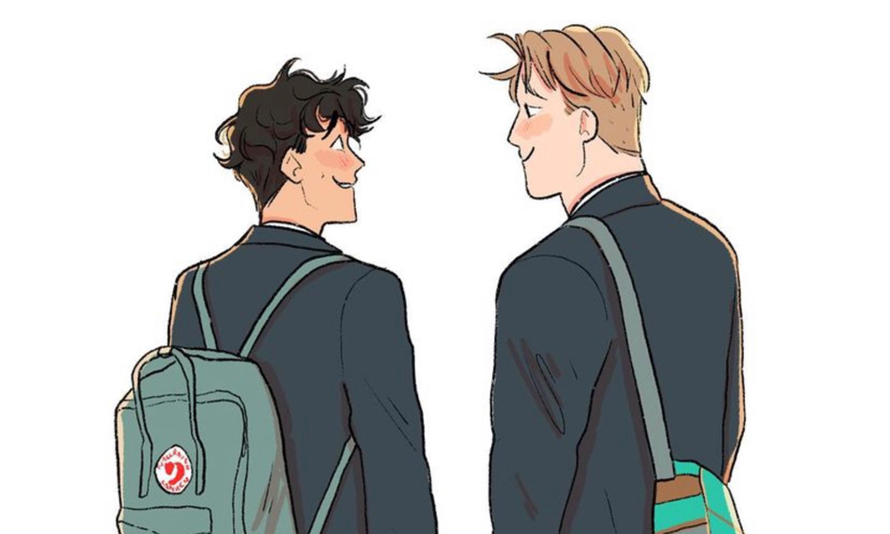

Charlie e Nick
Baseada na Banda Desenhada publicada na internet e que, posteriormente, se tornou uma série de livros pela autora Alice Oseman, Heartstopper apresenta-nos o romance vivido pelos jovens Charlie Spring e Nick Nelson.
Charlie é um aluno muito dedicado, mas que tem sofrido bullying na escola de forma constante desde que se assumiu gay, o que resultou numa personalidade bastante insegura nos últimos tempos. Já Nick, é super popular e querido por ser um excelente jogador de rugby.
Quando os dois foram postos na mesma sala de estudo e sentados lado a lado todas as manhãs, eles desenvolvem uma amizade intensa e imprevisível, aproximando-se mais a cada dia. Charlie logo percebe o que está a sentir por Nick, apesar de entender que apaixonar-se por um amigo,hétero, pode acabar por ser uma grande chatice. No entanto, Nick também está em dúvida sobre como se sente a respeito de Charlie. Quem sabe talvez os dois rapazes estejam prestes a descobrir que o amor pode funcionar de maneiras incríveis e surpreendentes.

Charlie e Nick
Nick e Charlie

Alice May Oseman, nasceu em Chatham, a 16 de outubro de 1994. É uma escritora e ilustradora inglesa de ficção para jovens adultos. A sua primeira publicação foi aos 19 anos, com o primeiro romance, Solitaire, publicado em 2014. Também é autora dos livros Radio Silence, I Was Born For This, Loveless e da banda desenhada online Heartstopper, posteriormente publicados em formato físico. Os seus romances focam-se na vivência adolescente contemporânea no Reino Unido e foram premiadas várias vezes, como no Inky Awards e no United By Pop Awards.